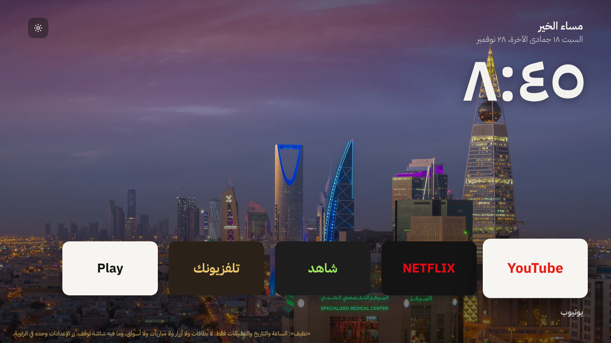
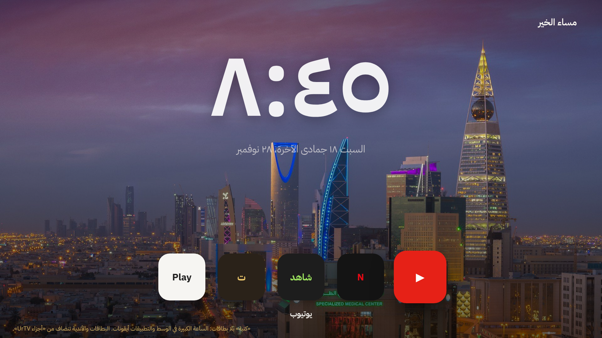
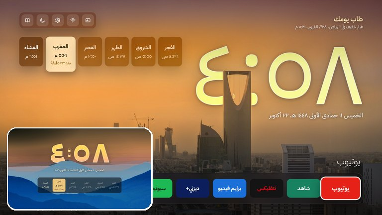

ابدأ بـ
اختر كيف يبدأ تلفزيونك. تقدر تغيّره بعدين.

نظيف
الساعة والتطبيقات، وبس
كامل
كل شي، وتختار وش تشيل

كنبة
ساعة كبيرة، بلا بطاقات

مصلّي
المواقيت والأذان
رياضة
مباريات اليوم وفرقك
للصغار
تطبيقاتهم والألعاب
720p بخط كبير: ثلاث في الصف، والباقي (بسيط، مثل ما هو) تحت بالنزول. ما يشتغل ووش لا يطلع للمركّز عليه بدل السطر.